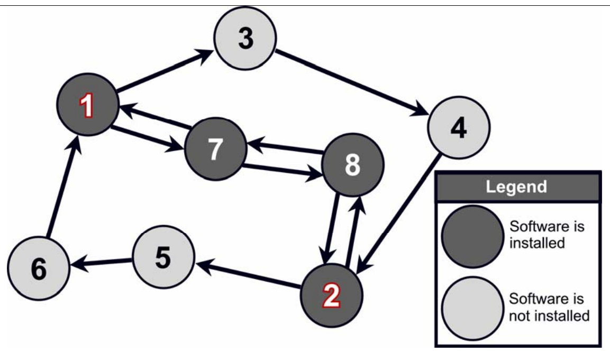

The 30th Annual ACM International Collegiate Programming Contest World Finals · Problem J
As more and more transactions between companies and people are being carried out electronically over the Internet, secure communications have become an important concern. The Internet Cryptographic Protocol Company (ICPC) specializes in secure business-to-business transactions carried out over a network. The system developed by ICPC is peculiar in the way it is deployed in the network.
A network like the Internet can be modeled as a directed graph: nodes represent machines or routers, and edges correspond to direct connections, where data can be transmitted along the direction of an edge. For two nodes to communicate, they have to transmit their data along directed paths from the first node to the second, and from the second node to the first.

To perform a secure transaction, ICPC’s system requires the installation of their software not only on the two end-nodes that want to communicate, but also on all intermediate nodes on the two paths connecting the end-nodes. Since ICPC charges customers according to how many copies of their software have to be installed, it would be interesting to have a program that for any network and end-node pair finds the cheapest way to connect the nodes.
The input consists of several descriptions of networks. The first line of each description contains two integers N and M (2 ≤ N ≤ 100), the number of nodes and edges in the network, respectively. The nodes in the network are labeled 1, 2, ..., N, where nodes 1 and 2 are the ones that want to communicate. The first line of the description is followed by M lines containing two integers X and Y (1 ≤ X, Y ≤ N), denoting that there is a directed edge from X to Y in the network.
The last description is followed by a line containing two zeroes.
For each network description in the input, display its number in the sequence of descriptions. Then display the minimum number of nodes on which the software has to be installed, such that there is a directed path from node 1 to node 2 using only the nodes with the software, and also a path from node 2 to node 1 with the same property. (Note that a node can be on both paths but a path need not contain all the nodes.) The count should include nodes 1 and 2.
If node 1 and 2 cannot communicate, display IMPOSSIBLE instead.
Follow the format in the sample given below, and display a blank line after each test case.
8 12 1 3 3 4 4 2 2 5 5 6 6 1 1 7 7 1 8 7 7 8 8 2 2 8 2 1 1 2 0 0
Network 1 Minimum number of nodes = 4 Network 2 IMPOSSIBLE